ヘッドシェル
Mシェル
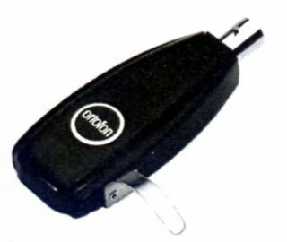
■価格 2,400円
■重量 8g
■備考 メタルプレス加工
価格は1973年頃のもの
1975年頃は\2,500
ライト・メタルヘッドシェルと呼ぶ資料あり
メタルMシェルと呼ぶ資料あり。
Mタイプと呼ぶ資料あり。
Lシェル
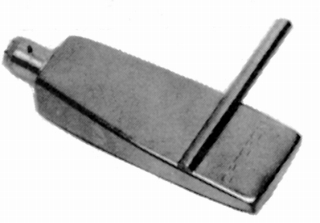
■価格 2,400円
■重量 10g
■備考 アルミプレス加工
価格は1973年頃のもの
1977年頃は\2,500
アルミ軽量ヘッドシェルと呼ぶ資料あり。
ライトアルミシェルと呼ぶ資料あり。
アルミLタイプと呼ぶ資料あり。
Gシェル
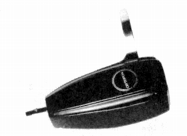
■価格 2,800円
■重量 10g
■備考 メタルプレス加工
価格は1975年頃のもの
メタルGシェルと呼ぶ資料あり。
GMタイプと呼ぶ資料あり。
Pシェル
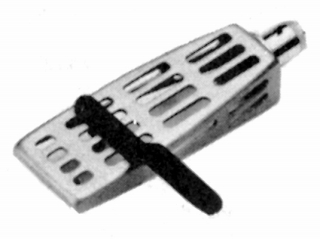
■価格 2,800円
■重量 8g
■備考 アルミプレス加工
価格は1979年頃のもの
アルミPタイプと呼ぶ資料あり。
Aシェル
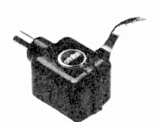
■価格 4,800円
■重量 23g
■備考 特殊プラスチック製
価格は1979年頃のもの
Aタイプと呼ぶ資料あり。
LH-2
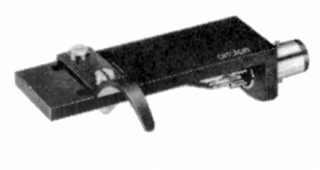
■価格 2,000円
■重量 13g
■備考 アルミ製
LH-1
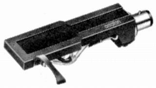
■価格 2,800円
■重量 13g
■備考 高純度アルミ合金製
LH2000
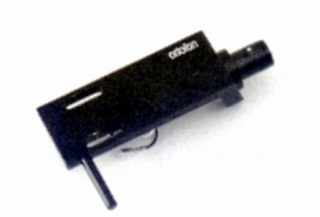
■価格 4,900円
■重量 15.7g(取付ネジ除く）
■備考 アルミ削出し
LH3000
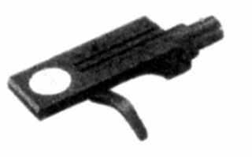
■価格 10,000円
■重量
■備考 アルミブロック削出し
MC3000用に開発。
LH7500
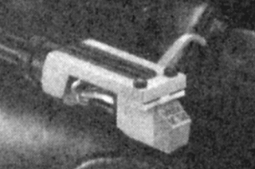
■価格 10,000円
■重量 15g
■備考 MC7500用の特製シェル
リード線は8N銅。
LH6000
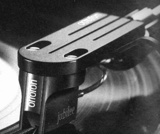 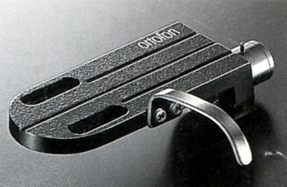
■価格 8,000円
■重量 14.6g（取付ネジ除く）
■備考 アルミブロック削出